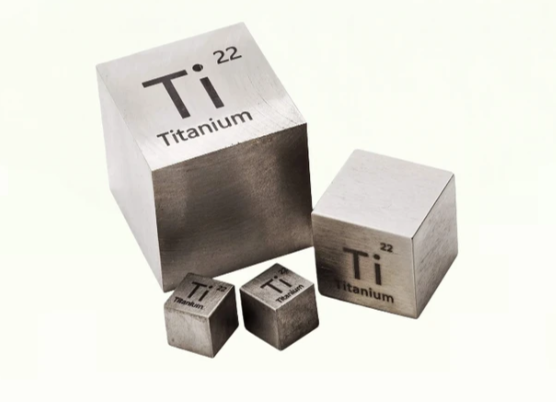
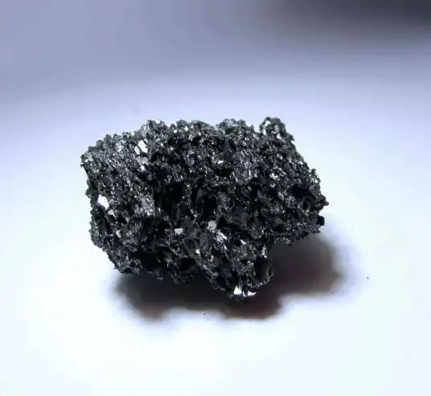
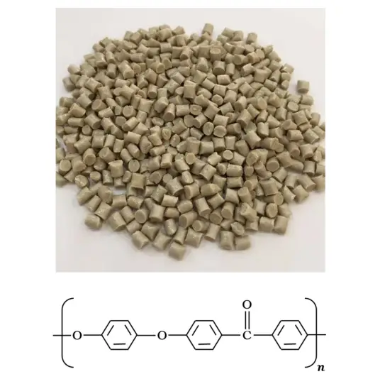
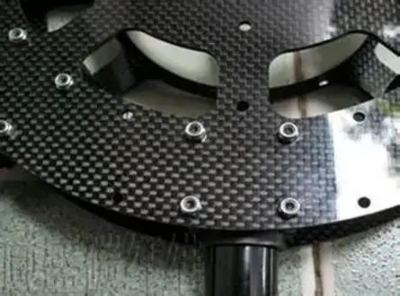

全套结构与穿戴辅料实拍图汇总
Complete Structure & Wearable Materials Showcase
一、金属材料：TC4钛合金（Ti-6Al-4V）

TC4是钛合金中的“万金油”，属于α+β型钛合金。它拥有极高的比强度（强度是钢的1.5倍，但重量仅为钢的60%），同时具备优异的耐海水腐蚀和抗高温蠕变性能，在400℃以下可长期工作。
特性：低密度（4.5g/cm³）、生物相容性极佳（无磁性）。
应用场景：航空发动机风扇叶片、深海潜水器耐压壳体，以及医疗领域的人工关节植入物。在宁波，高端模具3D打印和海洋工程装备中常采用此材料。
加工难点：导热系数低，切削加工时易产生剧烈温升，对刀具要求极高。
TC4钛合金：热处理与表面强化
对TC4钛合金而言，后处理的核心是调控性能和强化表面，主要包括：
热处理：通过退火、固溶、时效等工艺，可以消除内应力、调整微观组织（如α和β相），从而优化强度、塑性和韧性。例如，固溶+时效处理能显著提高显微硬度；热等静压（HIP）可消除内部孔隙和裂纹，大幅提升硬度（研究显示可提升40.9%）和致密度。
表面强化：采用喷丸强化、激光冲击强化或低塑性抛光等技术，在表面引入残余压应力。这能有效提高疲劳强度和寿命，使疲劳裂纹源从表面转移到次表层。
表面处理：为应对航空航天、海洋工程等高腐蚀环境，可通过化学处理、阳极氧化、物理气相沉积（PVD）等手段在表面形成保护层，显著提升耐腐蚀性能。
二、陶瓷材料：碳化硅（SiC）

作为第三代半导体和结构陶瓷的明星材料，碳化硅是共价键结合的化合物。它拥有仅次于金刚石的莫氏硬度（9.5级），热导率极高（是钢的3倍），且具有优异的抗热震性和极低的膨胀系数。
特性：耐高温（分解温度约2700℃）、耐强酸碱腐蚀。
应用场景：新能源车（如特斯拉）的牵引逆变器功率芯片（SiC MOSFET）、高温窑炉的耐火横梁，以及防弹插板。宁波作为新能源汽车配件重镇，SiC功率器件的封装基板需求正爆发式增长。
加工难点：烧结收缩率难控制，且精密加工依赖金刚石砂轮，成本高昂。
碳化硅陶瓷（SiC）：烧结优化与精密加工
碳化硅陶瓷的后处理主要围绕提升性能和实现精密加工。
后氧化处理（POT）：这是制备碳化硅陶瓷膜的关键步骤。通过精确控制氧化过程，不仅能去除残留的游离碳，还能显著改善陶瓷膜的亲水性和渗透通量（研究显示通量可从1074提升至5118 L·m⁻²·h⁻¹），同时提高其力学性能和化学稳定性。
表面处理与精密加工：
- 激光加工：可用于对碳化硅进行精密改性或加工，但需精确控制工艺参数以获得理想的表面形貌。
- CVD涂层：通过化学气相沉积（CVD）技术，可在碳化硅基体上沉积新的碳化硅涂层，用于修复表面缺陷或赋予特殊功能。
- 化学腐蚀：使用特定化学溶液腐蚀表面，可以显著改善其表面润湿性。
三、塑料材料（高分子）：聚醚醚酮（PEEK）

PEEK是一种线性芳香族半结晶型热塑性塑料，属于特种工程塑料的顶端。其玻璃化转变温度高达143℃，熔点为343℃，长期使用温度可达260℃。它具有优异的自润滑性和耐水解性（可耐高压水蒸气灭菌）。
特性：阻燃性（UL94 V-0级）、抗蠕变能力强，且可通过玻璃纤维或碳纤维增强。
应用场景：航空航天线缆绝缘层、石油开采密封件，以及骨科创伤内固定板。在宁波的注塑机产业集群中，PEEK常用于制造耐高温的注塑机隔热帽和齿轮。
加工方式：注塑成型、挤出成型，也可通过增材制造（FDM/3D打印）成型。
聚醚醚酮（PEEK）：退火与表面处理
PEEK的后处理关键在于优化性能和改善表面，尤其对于增材制造（3D打印）的部件。
退火处理：对于3D打印的PEEK部件，退火是必要的后处理步骤。它能增强聚合物链的移动性，促进结构重组和再结晶，从而提升层间结合力、降低表面粗糙度，并提高拉伸强度和抗弯强度（研究表明，在360°C下退火6小时，抗弯强度可提升16 MPa）。
表面处理：
- 机械抛光：采用离心盘精加工等方法，可以有效降低3D打印PEEK表面的波纹度，并进行去毛刺和圆角处理。
- 精密加工与涂层：对于医用导管等高精度部件，常需进行切割、钻孔等精密机械加工或激光雕刻。为提升润滑性，还会进行抛光或涂层处理。
四、复合材料：碳纤维增强环氧树脂预浸料（CFRP）

这是一种典型的先进复合材料，由高强高模的碳纤维作为增强体，热固性环氧树脂作为基体。两者的结合产生了“1+1>2”的协同效应，其拉伸强度可达2000-3000MPa，但密度仅1.6g/cm³左右。同时，它具有极强的各向异性（顺着纤维方向强度极高）。
特性：高比模量、耐疲劳性好、可设计性强（可改变铺层角度满足受力需求）。
应用场景：F1赛车单体壳、大型风电叶片主梁帽、高端折叠屏手机骨架。宁波的石化工业和汽车轻量化产业中，CFRP被广泛用于替代钢材制造车身结构件。
生命周期：制造依赖热压罐或RTM工艺，且回收难度大，目前正逐步向可回收热塑性复合材料过渡。
碳纤维增强环氧树脂预浸料（CFRP）：表面处理与回收
CFRP的后处理侧重于增强界面结合和应对回收挑战。
碳纤维表面处理：为改善碳纤维与树脂基体的浸润性和结合力，需对碳纤维进行表面处理。方法包括气相氧化法（如热空气、臭氧处理）和液相氧化法（如硝酸浸泡），目的是增加纤维表面粗糙度和活性官能团。
复合材料回收：由于CFRP回收难度大，相关后处理技术正受到越来越多的关注。例如，利用冰乙酸与过氧化氢溶液，可在较温和条件下使树脂溶胀并初步降解，从而实现碳纤维的回收。